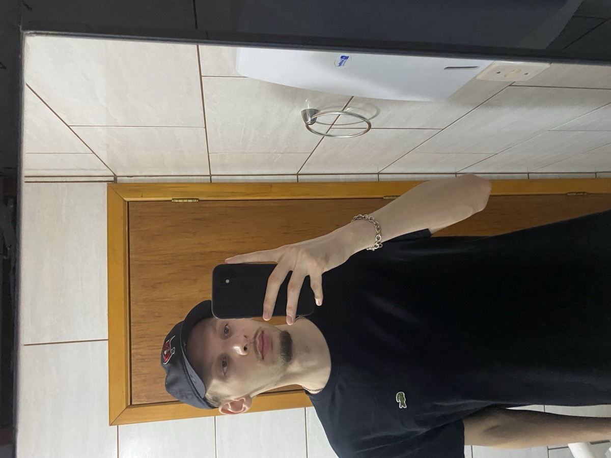

Sobre Mim

Trajetória acadêmica
Sou estudante do 1º semestre de Ciência da Computação na Universidade de Passo Fundo (UPF). Sempre tive curiosidade em entender como os computadores e os programas funcionam por dentro, e foi essa vontade que me trouxe para a área de tecnologia. Hoje estou tendo meus primeiros contatos com lógica de programação, algoritmos e desenvolvimento para a web.
Trajetória profissional
Trabalho desde os 18 anos. Meu primeiro emprego foi na fábrica de placas do DETRAN da minha cidade, que funcionava junto a um escritório de despachante, onde eu também ajudava. Depois, passei a atuar como despachante e no ponto bancário do Banrisul. Foi nessa caminhada que decidi investir em uma nova área: hoje meu objetivo é evoluir como programador, participar de projetos reais e aprender com pessoas mais experientes. Acredito que a prática constante é o melhor caminho para crescer na profissão.
Interesses
Fora da sala de aula, gosto de programação, jogos, principalmente música e de cozinhar. Tenho bastante interesse em desenvolvimento web, inteligência artificial, produção musical e em entender como grandes sistemas funcionam.